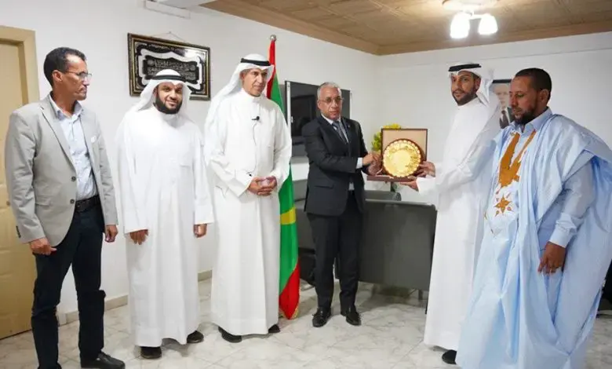

Une ONG koweïtienne primée par le ministère de la santé après avoir effectué 1200 opérations de la cataracte

Le ministère mauritanien de la santé a primé mardi les membres de l’initiative koweïtienne « Noor Boubyan » après que cette association ait effectué gratuitement 1200 opérations pour la cataracte.
Le ministre mauritanien de la santé, Moctar O. Dahi a remercié les membres de la mission koweïtienne et les différentes parties ayant contribué à cette opération, pour les aides et les importants efforts déployés lors de cette campagne.
Le ministre a ajouté, lors d’une rencontre avec les membres de la mission, que le gouvernement mauritanien accorde un intérêt particulier aux interventions médicales dispensées pour les couches les plus démunies.
Cette campagne s’inscrit dans le cadre des projets NOOR BOUBYAN, financés par la banque BOUBYAN et supervisés par la fondation islamique mondiale au Koweït.
La délégation qui a supervisé cette initiative et qui comptait des médecins, des volontaires, des journalistes et des activistes des réseaux sociaux, a distribué plus de 1500 lunettes médicales lors de la campagne.
Dans une déclaration qu’il a faite, le directeur de la banque BOUBYAN, Mohamed El Barrad a dit que cette initiative, la 5ème du genre, a bénéficié à la Mauritanie, après un arrêt qui a duré deux ans pour cause de coronavirus.